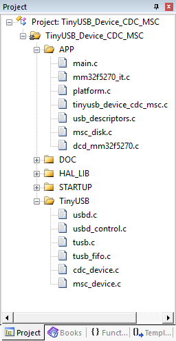
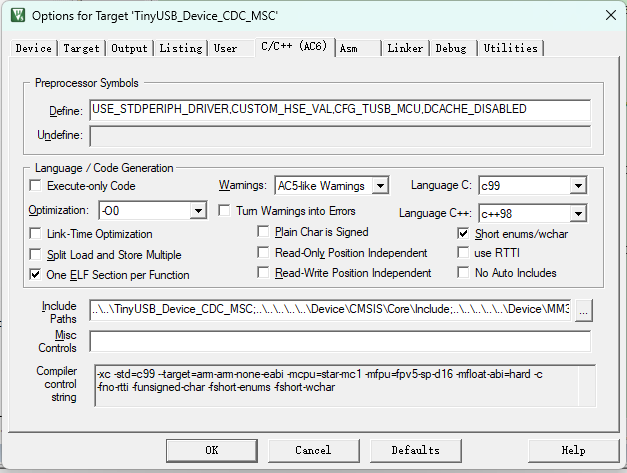
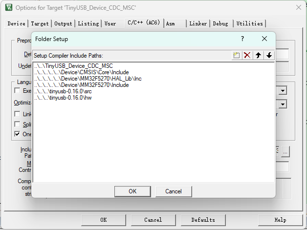

基于Mini-F5277-OB移植TinyUSB¶
简介¶
本文将基于 Mini-F5277-OB 开发板，讲解从零开始移植 TinyUSB 协议栈的全过程。
Mini-F5277-OB 开发板
Mini-F5277-OB 开发板，搭载了 MM32F5270 系列中 MM32F5277E7PV 型号的 MCU，为32位 Arm China STAR-MC1 架构，内置 256KB Flash，192KB SRAM，并带有 USB 全速设备控制器，支持 12Mbps 的传输速率。其中 USB_FS 控制器内置 USB 全速 PHY。详情见：灵动微电子官网 Mini-F5277-OB 开发板。

TinyUSB 协议栈
TinyUSB 是一个应用于嵌入式系统的开源跨平台 USB Host / Device 协议栈，其优点为：
-
MIT 开源协议，不用担心版权问题；
-
内存安全（没有动态内存分配）；
-
线程安全（所有中断事件都会放在非中断函数中处理）。
如下图所示，为 TinyUSB 协议栈结构框图：

Tip
由上图可知，TinyUSB协议栈中的Host 与 Device 是相互独立的两个协议。
获取MCU库函数与例程¶
Mini-F5277-OB 开发板的驱动样例及原理图位于：https://www.mindmotion.com.cn/support/development_tools/evaluation_boards/miniboard/mm32f5277e7pv，下载 “MM32F5270 库函数与例程”，这里我们用到了软件包中的 device 文件夹，其中包含 MCU 的启动文件和驱动文件。
获取TinyUSB协议栈¶
本次移植是基于 TinyUSB V0.16.0 进行移植，这里我们用到了软件包 tinyusb\src 作为协议栈源码、 tinyusb\examples 文件夹中 USB 样例代码和 tinyusb\hw\bsp文件夹中的支持的开发板源文件。
.
├── docs # Documentation
├── examples # Examples with make and cmake build system
├── hw
│ ├── bsp # Supported boards source files
│ └── mcu # Low level mcu core & peripheral drivers
├── lib # Sources from 3rd party such as freeRTOS, fatfs ...
├── src # All sources files for TinyUSB stack itself.
├── test # Tests: unit test, fuzzing, hardware test
└── tools # Files used internally
项目移植目录结构¶
源文件目录¶
.
|-- 3rdPartySoftwarePorting
| `-- TinyUSB
| |-- Demos
| | `-- TinyUSB_Device_CDC_MSC
| `-- tinyusb-0.16.0
| |-- CODE_OF_CONDUCT.rst
| |-- CONTRIBUTORS.rst
| |-- LICENSE
| |-- README.rst
| |-- docs
| |-- examples
| |-- hw
| |-- lib
| |-- library.json
| |-- pkg.yml
| |-- repository.yml
| |-- src
| |-- test
| |-- tools
| `-- version.yml
`-- Device
- device - MCU 启动文件及外设驱动
- Demos - TinyUSB协议栈样例
- tinyusb-0.16.0 - TinyUSB协议栈源码
keil工程目录¶

项目移植文件准备¶
- 在工程中新建 TinyUSB 分组，并包含引用以下文件至 TinyUSB 组内。以下文件均在获取的 TinyUSB 源码中。
usbd.c usbd_control.c tusb.c tusb_fifo.c *_device.c - 将 TinyUSB 源码目录下 example 下的对应文件，以 cdc_msc 为例，将 tinyusb-0.16.0\examples\device\cdc_msc\src 四个文件复制到例程 Demos\TinyUSB_Device_CDC_MSC 文件夹里面。并添加至工程 APP 分组内。
Tip
为了保持和 LibSamples 的风格整体一致，可以将 TinyUSB 源码中的 main 文件重新命名为工程名，如 tinyusb_device_cdc_msc.c
- 将 tinyusb-0.16.0\src\portable\template\dcd_template.c 文件复制到例程 Demos\TinyUSB_Device_CDC_MSC 文件夹里面。并改名为 dcd_mm32f5270.c 添加至工程 APP 分组内。
此文件为 device controller driver，是 TinyUSB 协议栈与芯片的的接口文件。系统时钟初始化、底层驱动等内容需要根据具体芯片来添加代码到此文件中。
keil工程配置¶


代码移植¶
dcd_mm32f5270.c 文件作为接口文件，代码的移植大部分在此文件中进行。
适配USB时钟¶
在 board_init() 函数中适配 USB 的工作时钟，F5270 使用 PLL2 为 USB 的工作时钟。该函数中还初始化了按键的引脚。
void board_init(void)
{
/* Enable HSE */
MODIFY_REG(RCC->CR, RCC_CR_HSEON_Msk, 1 << RCC_CR_HSEON_Pos);
// Config PLL2 clock param.
RCC_PLL2Config(1, 0, 7, 1); // PLL2 = HSE(12) * (7+1) / (1+1) = 48MHz
MODIFY_REG(RCC->PLL2CFGR, RCC_PLL2CFGR_PLL2_ICTRL_Msk, 3 << RCC_PLL2CFGR_PLL2_ICTRL_Pos);
// Enable PLL2 clock.
RCC_PLL2Cmd(ENABLE);
while((RCC->CR & RCC_CR_PLL2RDY_Msk) == 0)
{
}
// Select PLL2 as USB clock source.
MODIFY_REG(RCC->CFGR, RCC_CFGR_USBCLKSEL_Msk, 1 << RCC_CFGR_USBCLKSEL_Pos);
// Enable USB Clock.
MODIFY_REG(RCC->CFGR, RCC_CFGR_USBPRE_Msk, 0 << RCC_CFGR_USBPRE_Pos);
// Select HSE as system clock.
RCC_SYSCLKConfig(2);
// Enable USB_FS Periph Clock.
RCC_AHBPeriphClockCmd(RCC_AHBPeriph_USB_FS, ENABLE);
RCC_AHBPeriphClockCmd(RCC_AHBPeriph_GPIOB, ENABLE);
RCC_AHBPeriphClockCmd(RCC_AHBPeriph_GPIOC, ENABLE);
// sys time init;
#if CFG_TUSB_OS == OPT_OS_NONE
RCC_ClocksTypeDef sys_clk;
RCC_GetClocksFreq(&sys_clk);
SysTick_Config(sys_clk.SYSCLK_Frequency / 1000);
NVIC_SetPriority(SysTick_IRQn, 0);
#endif
// PB0-KEY1
GPIO_InitTypeDef gpio_init;
gpio_init.GPIO_Mode = GPIO_Mode_IPU;
gpio_init.GPIO_Pin = GPIO_Pin_0;
GPIO_Init(GPIOB, &gpio_init);
// PB1-KEY2
gpio_init.GPIO_Pin = GPIO_Pin_1;
GPIO_Init(GPIOB, &gpio_init);
}
打印调试信息¶
对刚接触 TinyUSB 协议栈的程序员，打印调试信息可以帮忙分析协议栈的工作流程。可以在 tusb_config.h 定义 Debug 级别为 2。
#define CFG_TUSB_DEBUG 2
初始化控制器¶
调用固件库函数初始化控制器，并清除挂起的 USB 中断。
void dcd_init(uint8_t rhport)
{
(void) rhport;
USBFS_Device_Init_Type init = {0u};
init.BufDespTable_Addr = (uint32_t)&usb_bd_tbl;
USBFS_InitDevice(BOARD_USB_PORT, &init);
USBFS_Cmd(BOARD_USB_PORT, true);
NVIC_ClearPendingIRQ(BOARD_USB_IRQn);
}
使能USB中断¶
void dcd_int_enable (uint8_t rhport)
{
(void) rhport;
USBFS_ITConfig(BOARD_USB_PORT, USBFS_IT_RESET | USBFS_IT_TOKENDONE
| USBFS_IT_SLEEP
| USBFS_IT_RESUME
| USBFS_IT_STALL
| USBFS_IT_SOFTOK, true); /* enable interrupts*/
NVIC_SetPriority(BOARD_USB_IRQn, 3u);
NVIC_EnableIRQ(BOARD_USB_IRQn);
}
// Interrupt Handler
void dcd_int_handler(uint8_t rhport)
{
uint32_t flag = USB_GetInterruptStatus(BOARD_USB_PORT);
if (flag & USB_INT_TOKENDONE)
{
USB_TokenDoneHandler(rhport);
return;
}
if (flag & USB_INT_RESET)
{
USB_ClearInterruptStatus(BOARD_USB_PORT, USB_INT_RESET);
USB_BusResetHandler();
dcd_event_bus_reset(rhport, TUSB_SPEED_FULL, true);
}
if (flag & USB_INT_SLEEP)
{
USB_ClearInterruptStatus(BOARD_USB_PORT, USB_INT_SLEEP);
dcd_event_bus_signal(rhport, DCD_EVENT_SUSPEND, true);
}
if (flag & USB_INT_RESUME)
{
USB_ClearInterruptStatus(BOARD_USB_PORT, USB_INT_RESUME);
dcd_event_bus_signal(rhport, DCD_EVENT_RESUME, true);
}
if (flag & USB_INT_STALL)
{
USB_EnableEndPointStall(BOARD_USB_PORT, USB_EP_0, false);
dcd_edpt_clear_stall(rhport, 0);
USB_BufDesp_Xfer(&usb_bd_tbl.Table[0u][USB_Direction_OUT][usb_epmng_tbl[0u][USB_Direction_OUT].odd_even], 1, usb_ep0_buffer, 64);
USB_ClearInterruptStatus(BOARD_USB_PORT, USB_INT_STALL);
}
if (flag & USB_INT_SOFTOK)
{
USB_ClearInterruptStatus(BOARD_USB_PORT, USB_INT_SOFTOK);
}
}
/* USB IRQ. */
void BOARD_USB_IRQHandler(void)
{
dcd_int_handler(BOARD_TUD_RHPORT);
}
定义全局变量¶
在 dcd_mm32f5270.c 文件中定义如下内容
/* OTG_FS BufferDescriptorTable Buffer. */
static __ALIGNED(512u) USB_BufDespTable_Type usb_bd_tbl = {0u}; /*usb_bufdesp_table */
static uint8_t usb_ep0_buf[CFG_TUD_ENDPOINT0_SIZE] = {0u}; /*usb_recv_buff. */
static uint8_t usb_setup_buf[8u] = {0u}; /* usb_setup_buff. */
static uint8_t usb_device_addr = 0u; /* usb_device_addr. */
typedef struct
{
uint8_t * xfer_buf;
uint32_t max_packet_size; /* EndPoint max packet size. */
uint32_t length; /* EndPoint xfer data length. */
uint32_t remaining; /* EndPoint xfer data remaining. */
bool odd_even; /* EndPoint BD OddEven status. */
bool data_n; /* next packet is DATA0 or DATA1. */
bool xfer_done;
} USB_EndPointManage_Type;
static USB_EndPointManage_Type usb_epmng_tbl[16u][2u] = {0u}; /* EndPointManage Table. */
定义 USB 数据缓冲区（在 USB 驱动中定义 USB_BufDespTable_Type 结构体类型），并在 USB 驱动初始化和 USB 协议栈任务处理时使用。
static __ALIGNED(512u) USB_BufDespTable_Type usb_bd_tbl = {0u}; /* usb_bufdesp_table */
USB端点管理¶
定义全局变量时，使用到的如下结构体主要用于端点管理。
typedef struct
{
uint8_t * xfer_buf;
uint32_t max_packet_size; /* EndPoint max packet size. */
uint32_t length; /* EndPoint xfer data length. */
uint32_t remaining; /* EndPoint xfer data remaining. */
bool odd_even; /* EndPoint BD OddEven status. */
bool data_n; /* next packet is DATA0 or DATA1. */
bool xfer_done;
} USB_EndPointManage_Type;
主机代码移植¶
MM32F5270 USB 支持 Host 功能，TinyUSB 协议栈中也包含了 Host 部分，在适配 Host 过程中，使用到了双向队列和数据库的概念。USB Host 移植接口在hcd_mm32f5270.c文件中实现，主要分为如下步骤：
- 双向队列实现
- 数据库实现
- 接口实现
- 中断处理
双向队列实现¶
USB 总线会像多个端点传输不同的内容，但 USB 总线只有一条，因此需要将传输任务放在一个队列中，按照队列的顺序传输数据 ；在传输过程中，可能会有分段传输，传输失败等情况，可能要将传输任务重新放在队列的头部，而不是末尾，因此，这个队列不仅能将传输任务放在队列尾部，也能将传输任务放在头部，就像堆栈那样，因此，需要实现一个双向队列。同普通的队列一样，双向队列需要一个队列buffer，以及管理队列 buffer 的字段，然后每次读写队列时，不能直接操作这个 buffer，而是只能使用给定的 push 和 pop 方法操作。实现操作如下：
buffer 和管理字段：
/* xfer task deque node. */
typedef struct
{
......
} xfer_task_node_t;
/* xfer task deque support. */
static xfer_task_node_t xfer_task_deque[TUH_HCD_PORT_XFER_TASK_DEQUE_SIZE] ={0u}; /* xfer task deque buf. */
static uint32_t xfer_task_head = 0u; /* record deque head. */
static uint32_t xfer_task_tail = 0u; /* record deque tail. */
static uint32_t xfer_task_cnt = 0u; /* record xfer task num. */
操作函数：
从头部 pop，从尾部 push：
/* get deque head node & delete the node in deque. */
bool xfer_task_pop_head(xfer_task_node_t * task)
{
if (0u == xfer_task_cnt)
{
return false; /* no xfer_task. */
}
/* pop head: read head, head--, cnt--. */
memcpy(task, &xfer_task_deque[xfer_task_head], sizeof(xfer_task_node_t)); /* read head. */
if (xfer_task_head == 0u) /* head--. */
{
xfer_task_head = TUH_HCD_PORT_XFER_TASK_DEQUE_SIZE - 1u;
}
else
{
xfer_task_head--;
}
xfer_task_cnt--; /* cnt--. */
return true;
}
/* put node in deque tail. */
bool xfer_task_push_tail(xfer_task_node_t * task)
{
if (TUH_HCD_PORT_XFER_TASK_DEQUE_SIZE == xfer_task_cnt)
{
return false; /* queue full. */
}
/* push tail: write tail, tail--, cnt++ */
memcpy(&xfer_task_deque[xfer_task_tail], task, sizeof(xfer_task_node_t)); /* write tail. */
if (xfer_task_tail == 0u) /* head++. */
{
xfer_task_tail = TUH_HCD_PORT_XFER_TASK_DEQUE_SIZE - 1u;
}
else
{
xfer_task_tail--;
}
xfer_task_cnt++;/* cnt++. */
return true;
}
有了上面的两个方法，这就是一个普通的单项队列，英文叫做 queue，既然是双向队列，就需要在这个基础上实现从头部 push 的功能，至于尾部 pop 由于在适配过程中没有使用，不再实现，下述为相关代码实现：
/* put node in deque head. */
bool xfer_task_push_head(xfer_task_node_t * task)
{
if (TUH_HCD_PORT_XFER_TASK_DEQUE_SIZE == xfer_task_cnt)
{
return false; /* queue full. */
}
/* push head: head++, write head, cnt++ */
if (xfer_task_head == TUH_HCD_PORT_XFER_TASK_DEQUE_SIZE - 1u) /* head++. */
{
xfer_task_head = 0u;
}
else
{
xfer_task_head++;
}
memcpy(&xfer_task_deque[xfer_task_head], task, sizeof(xfer_task_node_t)); /* write tail. */
xfer_task_cnt++;/* cnt++. */
return true;
}
需要清空双向队列的内容时，或初始化双向队列时，可使用下列方法操作:
/* reset the deque, delete all node. */
void xfer_task_reset(void)
{
xfer_task_head = 0u;
xfer_task_tail = 0u;
xfer_task_cnt = 0u;
}
数据库实现¶
所谓数据库，只是用于存放各设备各端点信息的地方。每次发送传输数据的时候，需要知道端点的buffer 大小等信息，所以需要在数据库中查询端点信息。需要支持inset操作，delete操作，update 操作和select操作，即增删改查：
insert 操作，指将一条数据条目插入到数据表中，该条目是数据表中原来没有的内容
delete 操作，指删除数据条目或数据表
update 操作，指将一条数据条目更新到原有的条目中，主要更新原有条目的字段内容
select 操作，根据关键字查找数据表中的条目
buffer 和管理字段：
/* endpoint status table. */
static ep_status_t ep_tbl[TUH_HCD_PORT_MAX_EP_NUM]; /* the table that record the ep_status. */
static uint32_t ep_count = 0u; /* record the how many endpoint status in ep_tbl[]. */
insert & update 操作：
/* add new or modify endpoint status. */
bool ep_set_status(ep_status_t * status)
{
ep_status_t * ep_status = ep_get_status(status->dev_ep_addr);
if (NULL == ep_status)
{
if (ep_count == TUH_HCD_PORT_MAX_EP_NUM)
{
return false;
}
ep_status = &ep_tbl[ep_count];
ep_count++;
}
memcpy(ep_status, status, sizeof(ep_status_t));
return true;
}
select 操作：
/* get endpoint status. */
ep_status_t * ep_get_status(uint32_t dev_ep_addr)
{
ep_status_t * ep_status = NULL;
for(uint32_t i = 0u; i < ep_count; i++)
{
if(dev_ep_addr == ep_tbl[i].dev_ep_addr)
{
ep_status = &ep_tbl[i];
break;
}
}
return ep_status;
}
除了上面的操作，当 USB Device 拔掉的时候，数据库需要进行复位，相当于执行 delete 操作：
/* clear all endpoint status. */
void ep_reset(void)
{
ep_count = 0u;
}
USB 缓冲描述表定义¶
在tuh_dcd_port.c 文件中定义USB 数据缓冲区（在USB驱动中定义USB_BufDespTable_Type结构体类型），在USB驱动初始化和USB协议栈任务处理时使用。
USB的配置由两部分组成：一部分是实实在在的 USB 寄存器配置，一部分是 SRAM 以 512 字节对齐的 512 字节大小的缓冲区描述表。
那么如何得到一块 512 Bytes 对齐的内存？这里举出三种方法：
- 在 linker 中声明出一段 512 字节对齐的 512 字节大小的空间。
- 使用 "__ALIGNED(512)" 或 "__attribute__((__aligned__(512)))" 等指令让编译器处理。
- 声明一段 1K 大小的空间，然后在其中找到 512 字节对齐的位置。
这里我们采用了第2种方法进行了实现：
/* usb buf descriptor table. */
__attribute__ ((aligned(512))) static USB_BufDespTable_Type usb_bdt = {0u};
/* speed status. */
volatile static tusb_speed_t device_speed = TUSB_SPEED_FULL;
/* xfer_buf. */
__attribute__ ((aligned(4))) static uint8_t usb_xfer_buf[TUH_HCD_PORT_XFER_BUF_SIZE] = {0u};
在初始化 USB 的时候，需要将缓冲区描述表的起始地址写入到 USB 寄存器中（USB_FS_BDTPAGE1，USB_FS_BDTPAGE2，USB_FS_BDTPAGE3），随后，这块缓冲区描述表就 “成为” 了 USB 寄存器中的一部分，当我们想要传输数据的时候，就会把要传输数据的缓冲区地址，缓冲区大小等信息写入到这个缓冲区描述表中，待传输数据完成后，缓冲区描述表中记录的内容也会发生变化，对这块缓冲区描述表的操作，就如同在 USB 寄存器上进行操作一般。
USB 数据的传输实际上是依靠 DMA 搬运实现的，但值得注意的是，USB 使用的 DMA 并不是 MCU 中的 DMA 外设，而是 USB 自带的 DMA，并且除了使用 USB 自带的 DMA 搬运的方式传输数据外，USB 并没有提供其他传输数据的方法。由于采用 DMA 搬运的方法传输数据，在使用 USB 功能的时候，需要注意一些会影响 DMA 工作的地方：例如，打开 DCACHE 后，对 SRAM 的访问并非直接写入到 SRAM 中，而是先暂时放入到内核的 CACHE 中，会造成 DMA 无法正常工作，所以，在使用 USB 功能的时候，应关闭 DCACHE 功能（或者使用 MPU 对 USB 使用到的内存加以保护）；再例如，有些 RAM 仅能被 CPU 访问，如 DTCM，这部分空间无法让 DMA 正常工作，因此也要避免将缓冲区描述表和要传输的数据存放在此类区域。
缓冲区描述表控制着十六个端点的传输功能，每个端点有两个传输方向，分别是 IN 和 OUT（如果每个传输方向算一个端点的话，USB_0 一共有 32 个端点）每个传输方向有两个缓冲区描述符组成，在传输数据的时候，两个缓冲区描述符交替工作，从而实现乒乓操作的过程，加快数据传输的速度。当然，双缓冲的操作较为复杂，增加了 USB 的操作难度，双缓冲也可配置为单缓冲，简化使用方法。

如图x所示，每个缓冲区描述符由两个四字节数据组成，第一个四字节数据记录了要传输数据的大小，data toggle，缓冲区描述符的拥有者等字段信息，第二个四字节数据则记录了要传输数据的起始位置。具体的字段信息，可参考各 MCU 的 UM。
USB 端点管理¶
在tud_dcd_port.c文件中定义USB_EndPointManage_Type结构体类型。
typedef struct
{
uint8_t * xfer_buf;
uint32_t max_packet_size; /* EndPoint max packet size. */
uint32_t length; /* EndPoint xfer data length. */
uint32_t remaining; /* EndPoint xfer data remaining. */
bool odd_even; /* EndPoint BD OddEven status. */
bool data_n; /* next packet is DATA0 or DATA1. */
bool xfer_done;
} USB_EndPointManage_Type;
USB驱动使能¶
在tuh_dcd_port.c中的dcd_init()函数实现。
/* Initialize controller to host mode. */
bool hcd_init(uint8_t rhport)
{
(void)rhport;
/* init usb host module. */
USB_Host_Init_Type usb_init;
usb_init.BufDespTable_Addr = (uint32_t)(&usb_bdt);
usb_init.SofThreshold = BOARD_USB_SOFTHRESHOLD;
usb_init.NakRetry = false;
USB_InitHost(BOARD_USB_PORT, &usb_init);
USB_EnableOddEvenReset(BOARD_USB_PORT, true); /* only use even buf desp, this example will not usb odd buf desp xfer data. */
USB_SetDeviceAddr(BOARD_USB_PORT, 0x00); /* set usb addr is 0x00, to xfer data when device attached. */
/* enable interrupt, but not use NVIC_EnableIRQ(). */
NVIC_ClearPendingIRQ(BOARD_USB_IRQn);
USB_EnableInterrupts(BOARD_USB_PORT, USB_INT_ATTACH | USB_INT_ERROR, true);
USB_EnableErrInterrupts(BOARD_USB_PORT, 0xFF, true);
return true;
}
USB Host中断¶
USB Host 中断的使能在tuh_dcd_port.c中的hcd_init()函数中已经实现。相较于 USB Device 中断的使能，USB Host 中断只开启了 USB_INT_ATTACH中断和USB_INT_ERROR中断。在tud_dcd_port.c中的BOARD_USB_IRQHandler()函数实现 USB Host 设备的中断服务函数。
/*
* USB interrupt handler.
*/
void BOARD_USB_IRQHandler(void)
{
uint32_t flag = USB_GetInterruptStatus(BOARD_USB_PORT);
flag &= USB_GetEnabledInterrupts(BOARD_USB_PORT);
/* device attached. */
if (0u != (flag & USB_INT_ATTACH))
{
process_attach();
}
/* sof token, prepare to xfer packet. */
if (0u != (flag & USB_INT_SOFTOK))
{
process_softok();
}
/* xfer a token done. */
if (0u != (flag & USB_INT_TOKENDONE))
{
process_token_done();
}
/* device detached. */
if (0u != (flag & USB_INT_RESET))
{
tuh_task(); /* clear all event. */
process_detach(); /* do detache process. */
}
if (0u != (flag & USB_INT_ERROR))
{
tuh_task(); /* clear all event. */
process_detach(); /* do detache process. */
uint32_t err = USB_GetErrInterruptStatus(BOARD_USB_PORT);
USB_ClearErrInterruptStatus(BOARD_USB_PORT, err); /* clear err interrut. */
}
USB_ClearInterruptStatus(BOARD_USB_PORT, flag);
}
TinyUSB样例介绍¶
- board_test
该样例为TinyUSB提供的基本板载样例，用于测试验证MCU和开发板能否正常运行，若运行正常则板载LED会进行闪烁，并在串口输出指定字符串。 - tud_cdc_dual_ports
该样例为TinyUSB提供的USB Device双串口样例，用于演示USB Device枚举双串口功能。 - tud_cdc_msc 该样例为TinyUSB提供的USB Device大容量存储设备样例，用于演示USB Device枚举大容量存储设备功能。
- tud_hid_composite 该样例为TinyUSB提供的USB Device HID样例，用于演示USB Device枚举鼠标键盘设备功能。
- tud_msc_dual_lun
该样例为TinyUSB提供的USB Device大容量存储设备样例，用于演示USB Device枚举两个大容量存储设备功能。 - tud_video_capture
该样例为TinyUSB提供的USB Device摄像头样例，用于演示USB Device枚举一个摄像头设备功能。 - tud_webusb_serial
该样例为TinyUSB提供的USB Device的Vender样例，用于演示USB Device枚举网页USB串口设备功能。 - tuh_bare_api
该样例为TinyUSB提供的USB Host的基本API使用演示样例，用于演示USB Host读取FATFS 格式的存储设备（如：U盘）功能。 - tuh_cdc_msc_hid
该样例为TinyUSB提供的USB Host读取大容量存储设演示样例，用于演示USB Host读取FATFS 格式的存储设备（如：U盘）功能。 - tuh_hid_controller
该样例为TinyUSB提供的USB Host控制器样例，用于演示USB Host读取游戏手柄信息（这里指定了索尼PS4游戏手柄）功能。